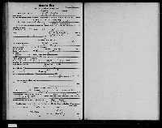

Mary Cordellia Williams Foster
13 November 1872 – 10 May 1952
Quick Facts
Immediate Family
Parents
- Pleasant “Doc/Dock” Williams (FamilySearch: 1848–1922; Find a Grave: 1847–1922)
- Almarinda G. “Maranda” Belton (1853–1921)
Spouses
- Charles Thomas Foster (25 July 1874–13 November 1962) — marriage reported 1 December 1897, Casey County, Kentucky
Children
- Ora Foster Campbell (1898–1988)
- Rosa/Rose Foster Witt
- Ernest Foster
- Clyde Foster
- Grace A. Foster Bell
- Bess Foster Bell
- William Foster
- Short Foster
- Stillborn child (1913; name and sex not given)
- Mae Foster Farris
Siblings
- Fidella William
- James Will Williams
- Janie Betsy Williams
- Nancy E. William
- Three additional siblings are listed in the compiled FamilySearch profile but not visible in the reviewed excerpt
Family Relationship Notes
Public FamilySearch profiles for Mary and Charles agree on their marriage and daughter Ora. Mary’s Find a Grave memorial also links Charles as her spouse and Ora as their daughter. The other children are named in the FamilySearch parent-family timeline and linked family lists; the 1913 stillborn entry has no name or sex in the timeline. These are compiled/user-contributed sources, not original parent-child records.
Mary’s Find a Grave memorial uses the name Mary Cordia “Cord” Williams Foster, while FamilySearch uses Mary Cordellia Williams. The profile preserves both source forms. FamilySearch and Find a Grave give slightly different birth years for her father Pleasant: 1848 or 1847; her mother’s name appears as Almarinda G. or “Maranda” Belton. The visible FamilySearch excerpt names four siblings; the full profile lists seven, with three not visible in the reviewed excerpt.
The two existing hero images are retained as memorial attachments, but their contents could not be independently inspected because the image host returned HTTP 403. The source-card thumbnails in the gallery are not complete readable records; one marriage thumbnail is labeled “Cora Foster,” so it is not treated as proof of Mary’s marriage.
On Family Tree Sites
Couple Folder
Life Timeline
13 November 1872 Born in Casey County, Kentucky, per FamilySearch and Find a Grave.
1 December 1897 Married Charles Thomas Foster in Casey County, Kentucky, per both published FamilySearch spouse profiles; original record not reviewed.
1898–1914 FamilySearch couple timeline places ten children, including daughter Ora and a stillborn child in 1913. Compiled family group.
1930–1940 Lived in Dunnville, Casey County, in the published FamilySearch profile; source list includes census records.
10 May 1952 Died in Casey County and buried Salem United Methodist Church Cemetery, Liberty, per published FamilySearch profile and Find a Grave.
Life Story
Mary Cordellia Williams Foster was born in Casey County, Kentucky, and was the wife of Charles Thomas Foster. Her public FamilySearch profile and Find a Grave memorial agree on her dates, marriage, Salem United Methodist Church Cemetery burial, and daughter Ora. The memorial spells her name Mary Cordia “Cord” Williams Foster; FamilySearch uses Mary Cordellia Williams. The family links are compiled/user-contributed and not an original parent-child record.
Photo Gallery



Sources and Evidence
- FamilySearch, Mary Cordellia Williams, LZR4-MDH: birth/death, parents, spouse, children, residence, burial; published profile lists 26 sources; visible cards include 1940 census and a county marriage card labeled “Cora Foster.” Compiled profile.
- Find a Grave, Mary Cordia “Cord” Williams Foster, Memorial 149916237: dates, Salem UMC burial, spouse Charles, daughter Ora, linked family lists, two memorial photos. User-contributed memorial.
- FamilySearch, Charles Thomas Foster, LZR4-M8M: spouse-and-children profile agrees on marriage and daughter Ora; compiled profile.
- FamilySearch source-card thumbnails: 1940 census card and marriage card. Both are thumbnail images and the marriage card is labeled “Cora,” so do not assert that it proves Mary’s marriage until the record is opened.
Research Notes and Open Questions
- FamilySearch calls her Mary Cordellia Williams; Find a Grave calls her Mary Cordia “Cord” Williams Foster. Treat these as name-form variants in the compiled sources, not as independently proved identity details.
- Her parents’ dates differ slightly between FamilySearch and Find a Grave: Pleasant is 1848 vs. 1847 birth; the mother is given as Almarinda G. / “Maranda” Belton. Keep the conflict explicit.
- The 1897 marriage appears in public compiled FamilySearch profiles; original county register/bond has not been reviewed.
- Find a Grave page has two photos; both image URLs returned HTTP 403 directly here, so the page links remain but image display is not verified.
- FamilySearch 1940 census and county-marriage cards are thumbnails only; marriage card says “Cora Foster,” not Mary.
DNA
No DNA matches linked yet.
Family Notes
Research notes and source inventory are in the couple folder’s Notes directory; no Google Docs were created or edited.
An American Bloodline · Generation VII